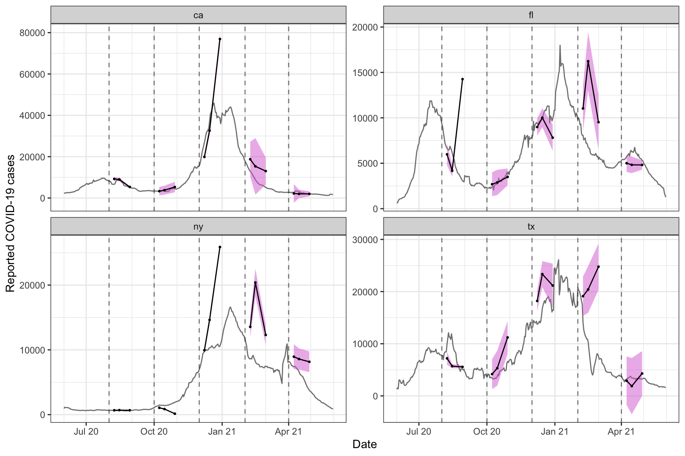

One of the most basic tools in the epitools package is slide_by_geo(), which is based on the family of functions provided by the slider package. In epitools, to “slide” means to apply a computation—represented as a function or formula—over a trailing window of n days of data, grouped by geo_value. Several other functions in the epitools package, such as pct_change() and estimate_deriv(), use slide_by_geo() as their workhorse.
Similar to the getting started guide, we’ll fetch daily reported COVID-19 cases for a few U.S. states (note: new, not cumulative cases) using the covidcast package, and then convert this to epi_signal format.
library(covidcast)
library(epitools)
library(dplyr)
x <- covidcast_signal(data_source = "jhu-csse",
signal = "confirmed_incidence_num",
start_day = "2020-06-01",
end_day = "2021-05-31",
geo_type = "state",
geo_values = c("ca", "fl", "ny", "tx")) %>%
as.epi_signal(name = "covid19_cases") %>%
select(value, geo_value, time_value, issue)Slide with a formula
We first demonstrate how to apply a 7-day trailing average to the daily counts in order to smooth the signal, by using a formula in the slide_fun argument of slide_by_geo().
slide_by_geo(x, slide_fun = ~ Mean(.x$value), n = 7) %>%
head(10)## # A tibble: 10 × 5
## value geo_value time_value issue slide_value
## <dbl> <chr> <date> <date> <dbl>
## 1 2360 ca 2020-06-01 2021-09-27 2360
## 2 2372 ca 2020-06-02 2021-09-16 2366
## 3 2214 ca 2020-06-03 2021-09-16 2315.
## 4 3011 ca 2020-06-04 2021-09-16 2489.
## 5 3025 ca 2020-06-05 2021-09-27 2596.
## 6 3046 ca 2020-06-06 2021-09-16 2671.
## 7 2404 ca 2020-06-07 2021-09-16 2633.
## 8 2385 ca 2020-06-08 2021-09-27 2637.
## 9 2700 ca 2020-06-09 2021-09-16 2684.
## 10 3208 ca 2020-06-10 2021-09-16 2826.The formula specified via slide_fun has access to all columns present in the original epi_signal data frame, and must refer to them with the prefix .x$. Here the function Mean() is a simple wrapper around mean() that omits NA values by default (provided by the epitools package).
Notice that slide_by_geo() returns a data frame with a new column appended that contains the results (from sliding the formula), named slide_value by default. We can instead specify a name up front using the col_name argument:
slide_by_geo(x, slide_fun = ~ Mean(.x$value), n = 7, col_name = "7dav") %>%
head(10)## # A tibble: 10 × 5
## value geo_value time_value issue `7dav`
## <dbl> <chr> <date> <date> <dbl>
## 1 2360 ca 2020-06-01 2021-09-27 2360
## 2 2372 ca 2020-06-02 2021-09-16 2366
## 3 2214 ca 2020-06-03 2021-09-16 2315.
## 4 3011 ca 2020-06-04 2021-09-16 2489.
## 5 3025 ca 2020-06-05 2021-09-27 2596.
## 6 3046 ca 2020-06-06 2021-09-16 2671.
## 7 2404 ca 2020-06-07 2021-09-16 2633.
## 8 2385 ca 2020-06-08 2021-09-27 2637.
## 9 2700 ca 2020-06-09 2021-09-16 2684.
## 10 3208 ca 2020-06-10 2021-09-16 2826.As a simple sanity check, we visualize the 7-day trailing averages computed on top of the original counts:
library(ggplot2)
theme_set(theme_bw())
slide_by_geo(x, slide_fun = ~ Mean(.x$value), n = 7, col_name = "7dav") %>%
ggplot(aes(x = time_value)) +
geom_col(aes(y = value, fill = geo_value), alpha = 0.5) +
geom_line(aes(y = `7dav`, col = geo_value), show.legend = FALSE) +
facet_wrap(~ geo_value, scales = "free_y") +
scale_x_date(minor_breaks = "month", date_labels = "%b %y") +
labs(x = "Date", y = "Reported COVID-19 cases", fill = "State")
Slide with a function
We can also pass a function for the slide_fun argument in slide_by_geo(). In this case, the passed function must have the following argument structure: x, a data frame the same column names as the original data frame; followed by any number of named additional arguments; and ending with ..., to capture general additional arguments. Recreating the last example of a 7-day trailing average:
slide_by_geo(x, slide_fun = function(x, ...) Mean(x$value), n = 7,
col_name = "7dav") %>%
head(10)## # A tibble: 10 × 5
## value geo_value time_value issue `7dav`
## <dbl> <chr> <date> <date> <dbl>
## 1 2360 ca 2020-06-01 2021-09-27 2360
## 2 2372 ca 2020-06-02 2021-09-16 2366
## 3 2214 ca 2020-06-03 2021-09-16 2315.
## 4 3011 ca 2020-06-04 2021-09-16 2489.
## 5 3025 ca 2020-06-05 2021-09-27 2596.
## 6 3046 ca 2020-06-06 2021-09-16 2671.
## 7 2404 ca 2020-06-07 2021-09-16 2633.
## 8 2385 ca 2020-06-08 2021-09-27 2637.
## 9 2700 ca 2020-06-09 2021-09-16 2684.
## 10 3208 ca 2020-06-10 2021-09-16 2826.As a more complicated example, we recreate two “local” forecasters. Simple versions of these can be built using the {tsibble} package, but here we also generate prediction intervals in addition to the point forecasts. The first is a simple “baseline” forecaster which propagates a flat line forward, and uses the residuals to create quantiles. The result will be a data frame with one column containing the desired quantiles, and the other containing the predicted values at those quantiles.
local_baseline <- function(x, ahead = 1, min_train_window = 25,
quantile_levels = c(0.1, 0.9),
symmetrize = TRUE) {
ahead <- round(ahead) # how many units of time ahead do we predict
if (length(x) < min_train_window + ahead)
# return NA forecasts if insufficient data
return(data.frame(value = NA, quantile = c(NA, quantile_levels)))
stopifnot(ahead > 0)
s <- ifelse(symmetrize, -1, NA) # should the PIs be symmetric?
point <- tail(x, 1) # the point forecast is the most recent value
resids <- x - lag(x, ahead)
resids <- c(resids, s * resids)
q <- c(0, quantile(resids, probs = quantile_levels, na.rm = TRUE))
data.frame(value = q + point, quantile = c(NA, quantile_levels))
}
baseline_fcasts <- x %>%
slide_by_geo(slide_fun = ~ local_baseline(.x$value),
n = 100, col_type = "list", col_name = "value") %>%
rename(forecast_date = time_value) %>%
mutate(target_date = forecast_date + 1) %>% # forecast 1 day ahead
select(-issue)
head(baseline_fcasts, 10)## # A tibble: 10 × 4
## value geo_value forecast_date target_date
## <list> <chr> <date> <date>
## 1 <df [3 × 2]> ca 2020-06-01 2020-06-02
## 2 <df [3 × 2]> ca 2020-06-02 2020-06-03
## 3 <df [3 × 2]> ca 2020-06-03 2020-06-04
## 4 <df [3 × 2]> ca 2020-06-04 2020-06-05
## 5 <df [3 × 2]> ca 2020-06-05 2020-06-06
## 6 <df [3 × 2]> ca 2020-06-06 2020-06-07
## 7 <df [3 × 2]> ca 2020-06-07 2020-06-08
## 8 <df [3 × 2]> ca 2020-06-08 2020-06-09
## 9 <df [3 × 2]> ca 2020-06-09 2020-06-10
## 10 <df [3 × 2]> ca 2020-06-10 2020-06-11Note the col_type = "list" argument is required here. To convert to a “long” tibble, we can unnest the result.
## # A tibble: 20 × 5
## value quantile geo_value forecast_date target_date
## <dbl> <dbl> <chr> <date> <date>
## 1 405. 0.1 tx 2021-05-25 2021-05-26
## 2 4651. 0.9 tx 2021-05-25 2021-05-26
## 3 2193 NA tx 2021-05-26 2021-05-27
## 4 70.4 0.1 tx 2021-05-26 2021-05-27
## 5 4316. 0.9 tx 2021-05-26 2021-05-27
## 6 1601 NA tx 2021-05-27 2021-05-28
## 7 -490. 0.1 tx 2021-05-27 2021-05-28
## 8 3692. 0.9 tx 2021-05-27 2021-05-28
## 9 1724 NA tx 2021-05-28 2021-05-29
## 10 -339. 0.1 tx 2021-05-28 2021-05-29
## 11 3787. 0.9 tx 2021-05-28 2021-05-29
## 12 550 NA tx 2021-05-29 2021-05-30
## 13 -1377. 0.1 tx 2021-05-29 2021-05-30
## 14 2477. 0.9 tx 2021-05-29 2021-05-30
## 15 374 NA tx 2021-05-30 2021-05-31
## 16 -1553. 0.1 tx 2021-05-30 2021-05-31
## 17 2301. 0.9 tx 2021-05-30 2021-05-31
## 18 174 NA tx 2021-05-31 2021-06-01
## 19 -1753. 0.1 tx 2021-05-31 2021-06-01
## 20 2101. 0.9 tx 2021-05-31 2021-06-01We can do a more complicated “local autoregressive” forecast by using trailing windows. Here, by default, we use 0-, 1-, and 2- week lags to forecast 1 day ahead.
local_ar <- function(x, lags = c(0, 7, 14), ahead = 1, min_train_window = 56,
quantile_levels = c(0.1, 0.9), symmetrize = TRUE) {
ahead <- round(ahead)
if (length(x) < min_train_window + ahead + max(lags))
# return NA forecasts if insufficient data
return(data.frame(value = NA, quantile = c(NA, quantile_levels)))
stopifnot(all(lags > -1), ahead > 0, max(lags) + ahead < length(x))
lags <- sort(lags)
s <- ifelse(symmetrize, -1, NA)
ma <- ahead + 1
ml <- max(lags) + 1
mat <- embed(x, ml + ma - 1)
y <- mat[, ma - ahead]
X <- mat[, lags + ma]
fit <- lm(y ~ X)
newx <- rev(tail(x, n = ml))[lags + 1]
point <- drop(c(1, newx) %*% coef(fit))
resids <- c(residuals(fit), s * residuals(fit))
q <- c(0, quantile(resids, probs = quantile_levels, na.rm = TRUE))
data.frame(value = q + point,
quantile = c(NA, quantile_levels),
row.names = NULL)
}
ar_fcasts <- x %>%
slide_by_geo(slide_fun = ~ local_ar(.x$value),
n = 100, col_type = "list", col_name = "value") %>%
rename(forecast_date = time_value) %>%
mutate(target_date = forecast_date + 1) %>%
select(-issue)
ar_fcasts %>% unnest(value) %>% tail(20)## # A tibble: 20 × 5
## value quantile geo_value forecast_date target_date
## <dbl> <dbl> <chr> <date> <date>
## 1 1319. 0.1 tx 2021-05-25 2021-05-26
## 2 4389. 0.9 tx 2021-05-25 2021-05-26
## 3 2519. NA tx 2021-05-26 2021-05-27
## 4 1022. 0.1 tx 2021-05-26 2021-05-27
## 5 4015. 0.9 tx 2021-05-26 2021-05-27
## 6 2241. NA tx 2021-05-27 2021-05-28
## 7 834. 0.1 tx 2021-05-27 2021-05-28
## 8 3648. 0.9 tx 2021-05-27 2021-05-28
## 9 2335. NA tx 2021-05-28 2021-05-29
## 10 951. 0.1 tx 2021-05-28 2021-05-29
## 11 3719. 0.9 tx 2021-05-28 2021-05-29
## 12 1810. NA tx 2021-05-29 2021-05-30
## 13 385. 0.1 tx 2021-05-29 2021-05-30
## 14 3234. 0.9 tx 2021-05-29 2021-05-30
## 15 1545. NA tx 2021-05-30 2021-05-31
## 16 134. 0.1 tx 2021-05-30 2021-05-31
## 17 2956. 0.9 tx 2021-05-30 2021-05-31
## 18 2020. NA tx 2021-05-31 2021-06-01
## 19 591. 0.1 tx 2021-05-31 2021-06-01
## 20 3449. 0.9 tx 2021-05-31 2021-06-01If we want to make forecasts using weekly data, we can apply slide_by_geo() twice: first to create weekly sums, then to do the forecast. We wrap this in a function to use a few times.
n_week_ar <- function(ahead = 7) {
x %>%
# sums but with imputed NAs
slide_by_geo( ~ Mean(.x$value) * 7, n = 7, col_name = "value") %>%
slide_by_geo(x, slide_fun = ~ local_ar(.x$value, ahead = ahead),
n = 100, col_name = "value", col_type = "list") %>%
rename(forecast_date = time_value) %>%
mutate(target_date = forecast_date + ahead) %>%
select(-issue) %>%
unnest(value)
}
one_week_ar <- n_week_ar()
tail(one_week_ar, 20)## # A tibble: 20 × 5
## value quantile geo_value forecast_date target_date
## <dbl> <dbl> <chr> <date> <date>
## 1 10779. 0.1 tx 2021-05-25 2021-06-01
## 2 17999. 0.9 tx 2021-05-25 2021-06-01
## 3 14336. NA tx 2021-05-26 2021-06-02
## 4 10783. 0.1 tx 2021-05-26 2021-06-02
## 5 17890. 0.9 tx 2021-05-26 2021-06-02
## 6 14139. NA tx 2021-05-27 2021-06-03
## 7 10546. 0.1 tx 2021-05-27 2021-06-03
## 8 17732. 0.9 tx 2021-05-27 2021-06-03
## 9 13862. NA tx 2021-05-28 2021-06-04
## 10 10417. 0.1 tx 2021-05-28 2021-06-04
## 11 17306. 0.9 tx 2021-05-28 2021-06-04
## 12 13218. NA tx 2021-05-29 2021-06-05
## 13 9790. 0.1 tx 2021-05-29 2021-06-05
## 14 16646. 0.9 tx 2021-05-29 2021-06-05
## 15 12732. NA tx 2021-05-30 2021-06-06
## 16 9343. 0.1 tx 2021-05-30 2021-06-06
## 17 16122. 0.9 tx 2021-05-30 2021-06-06
## 18 10675. NA tx 2021-05-31 2021-06-07
## 19 7240. 0.1 tx 2021-05-31 2021-06-07
## 20 14111. 0.9 tx 2021-05-31 2021-06-07Note that with both of these forecasting tasks, we are unfairly using “finalized” data, the data that is currently available to us. This may not be the same as the data that would have been available at the forecast_date. See ?covidcast::covidcast_signal() for some discuss on “Issue dates and revisions”.
Finally, we can visualize the forecasts with a little bit of data wrangling. Here, we also create 2 and 3 week ahead forecasts, and plot the results for a few forecast dates.
multi_week_forecasts <- bind_rows(one_week_ar, n_week_ar(14), n_week_ar(21))
dates_to_show <- seq(as.Date("2021-02-01"), by = "month", length = 4)
fcast_fan <- multi_week_forecasts %>%
filter(forecast_date %in% dates_to_show) %>%
group_by(forecast_date, target_date, geo_value) %>%
mutate(quantile = case_when(
is.na(quantile) ~ "point",
quantile < .5 ~ "lo",
TRUE ~ "hi")) %>%
pivot_wider(names_from = quantile, values_from = value)
weekly_totals <- x %>%
slide_by_geo( ~ Mean(.x$value) * 7, n = 7, col_name = "value")
ggplot(fcast_fan, aes(x = target_date)) +
geom_ribbon(aes(ymin = lo, ymax = hi, group = forecast_date),
fill = "cornflowerblue", alpha = .75) +
geom_line(aes(y = point, group = forecast_date), color = "orange") +
geom_point(aes(y = point, group = forecast_date), color = "orange") +
facet_wrap(~geo_value) +
geom_line(data = weekly_totals, aes(time_value, value)) +
coord_cartesian(xlim = as.Date(c("2021-01-01", "2021-06-01"))) +
ylab("Weekly COVID-19 cases") +
xlab("Date") +
scale_y_continuous(labels = scales::label_number_si()) 